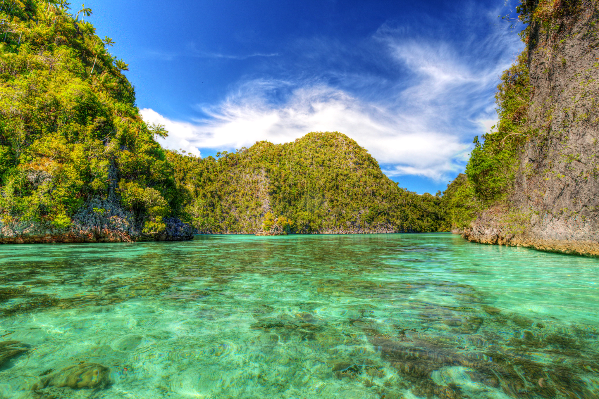
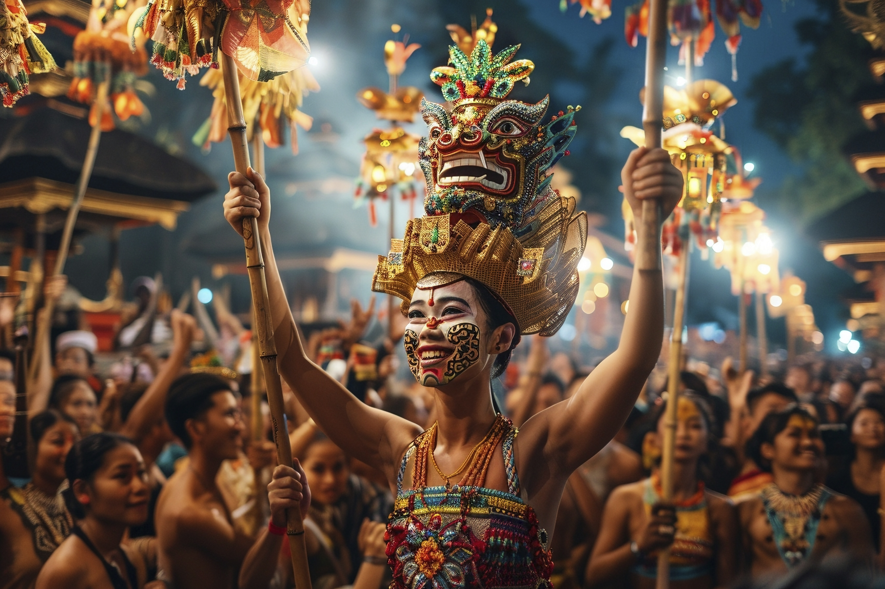

🌴 Natureza e Geografia
- A Indonésia abriga uma natureza exuberante, com florestas tropicais repletas de vida selvagem única, praias paradisíacas e vulcões imponentes. Seus ecossistemas marinhos, como Raja Ampat, possuem a maior biodiversidade do mundo, enquanto os campos de arroz de Bali mostram a harmonia entre homem e natureza. Apesar de sua beleza, o país enfrenta desafios como desmatamento e poluição, que ameaçam esse patrimônio natural.

|
🏛 Cultura e Religião
- A cultura da Indonésia é uma rica mistura de influências indígenas, hindus, budistas, islâmicas e coloniais, refletida em suas tradições, danças e arte. O país, com mais de 700 idiomas locais e a predominância do islã, celebra festivais coloridos como o Nyepi em Bali e o Ramadã. Sua culinária picante, como o nasi goreng e o rendang, e artes tradicionais, como o teatro de sombras wayang kulit, mostram sua diversidade única.

|
🍛 Culinaria e Curiosidades
- A culinária indonésia é marcada por sabores intensos e picantes, com pratos como o nasi goreng (arroz frito), rendang (carne ao leite de coco) e satay (espetinhos grelhados). Ingredientes como pasta de amendoim, leite de coco, pimenta e especiarias criam combinações únicas, variando por região. Influências chinesas, indianas e holandesas enriquecem sua gastronomia, tornando-a uma das mais vibrantes do Sudeste Asiático.

|